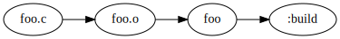
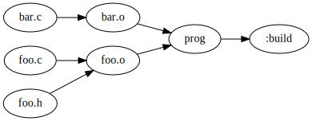
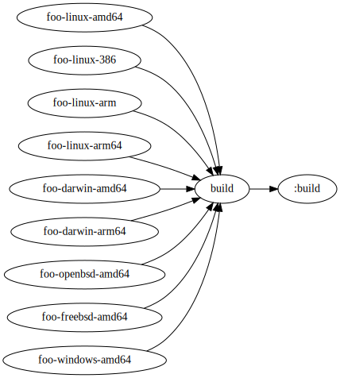
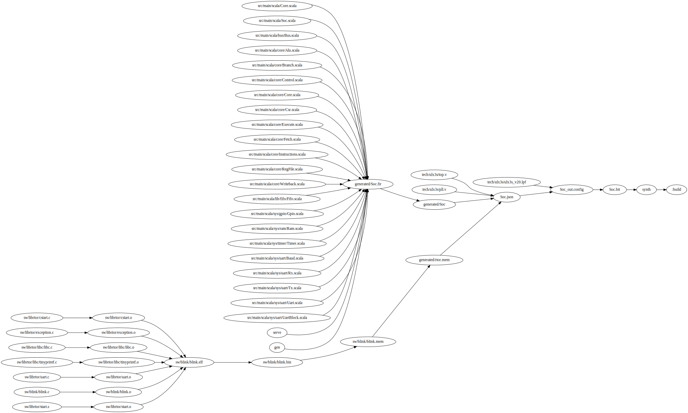
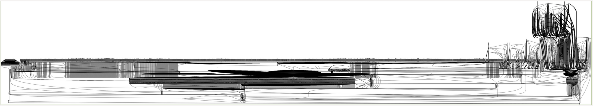

This article is about a new build tool I’ve been working on called Knit. Check it out on GitHub!
What’s wrong with Make?
This might be surprising but I actually like Make overall. It has a concise syntax for declaring dependencies, and it doesn’t make any assumptions about the programs I am building. These are the two biggest factors I consider when looking for a replacement, and so far I haven’t found any build systems that manage to keep Make’s core simplicity while improving on it1 2 3.
And there are definitely some things about Make that could be improved. Here are my biggest inconveniences:
- Make’s rules don’t have implicit dependencies on their recipes. This means
that if a recipe changes, the rule doesn’t necessarily get rebuilt. I like to
use Make variables to control various flags, and changing a variable at the
command-line4 doesn’t cause the modified rules to be rebuilt.
Instead Make tells me “nothing to do”, and then I have to use
make -B. One solution is to have the Makefile generate a stamp file that contains the commands that were run, and use that file as a dependency for the rules. In my experience this can easily become a complicated mess and is annoying to set up. - Make’s declarative rule syntax is good, but the meta-programming language around it isn’t so good. I can never remember how to define/call a function in Make. It just doesn’t stack up to a normal scripting language with features like modules, loops, arrays/maps, a standard library etc…
- Sub-builds in Make are usually done by putting a
Makefilein a sub-directory and then invoking it usingmake -C subdirwith a rule that is always out-of-date (so it always gets run). This is a clever mechanism, but it fractures the build into multiple Make processes, each of which is not fully aware of the build. As a result, Make needs things like the Job Server (shared across multiple processes) to prevent it from spawning too many jobs, and it isn’t possible for one Make process to know the entire dependency graph (for example, to display it). There is also the unfortunate consequence that sub-builds get spawned even if they are up-to-date, which can slow down incremental builds.
There are also some more minor inconveniences when working with Make:
- Built-in variables have strange names like
$@,$<,$^. - Makefiles require you to use tabs.
- It isn’t possible to get information about the build graph, like dumping it
to a file. For example, Make could be able to automatically dump a
compile_commands.json. - I have to write my own clean functions, even though Make could know what files need to be cleaned.
- I have to use hacks like
.PHONYto mark rules as virtual. - I can’t run
makefrom anywhere in my project – I have to be at the root (or wherever the Makefile is).
A better Make
After identifying the issues I was having with Make, I set out to make a tool
like Make but better. The result is Knit.
Knit keeps the concise declarative rule syntax that Make uses (with the
addition of rule attributes – an idea from Plan9 mk), but allows it to be
embedded within a Lua script and generally improves the build environment.
Sub-builds can be handled without spawning separate sub-processes, rules depend
on their recipes (tracked in the Knit cache5), and all the minor
inconveniences are fixed (normal variable names, automatic cleaning, rules
marked as virtual using an attribute, run knit from anywhere in the project,
can dump build information such as compile_commands.json).
There are also some other small improvements over Make: Knit runs jobs in parallel by default (using up to the number of cores on your machine), and can use a hash-based file modification checker or a timestamp-based one (and can also be passed a list of files in flags that should be treated as updated).
So far I have been pretty happy with Knit. Hopefully it will be useful for someone else as well! Knit is currently in beta, and I plan to release an initial stable version in the next few months. If you have feedback on the design, please let me know! I might be able to make changes based on your feedback.
Example Knitfile
Let’s look at an example Knitfile. It should look quite familiar if you use Make.
return b{
$ foo.o: foo.c
gcc -c -O2 $input -o $output
$ foo: foo.o
gcc $input -o $output
}
Knit uses roughly the same syntax for rules as Make. However, rules are defined
within a Lua script, and use the $ prefix to differentiate them from standard
Lua code. In order to run a build, a Knitfile must return a buildset object,
which is created by calling the b function and passing it a table of rules.
Buildsets are explained in more detail in a later
section.
This post will explain how to use Knit, but please also refer to the documentation for all the up-to-date details.
What’s in a rule?
This Knitfile defines two rules: one for building foo.o given foo.c, and
another for building foo given foo.o. Each rule defines a list of outputs
(or targets) and a list of inputs (or prerequisites). In this case, each rule
has one input and one output. These rules also each define a recipe, which is a
shell command that is invoked to create the outputs from the inputs. The
special variables input and output are defined in the recipe and hold the
list of targets and prerequisites (equivalent to Make’s $^ and $@
variables).
Running knit foo in a directory with a file called foo.c will run
$ knit foo
gcc -c -O2 foo.c -o foo.o
gcc foo.o -o foo
Knit creates the build graph – determining that to build foo it must first
build foo.o, which can be built because foo.c exists.

(In this graph, :build is a special internal rule used as the root of the
build).
If you run knit foo again, it will say no work needs to be done because it
can tell that neither foo.c nor foo.o have been modified. If you modify a
file in the build graph, it will detect the modification and rebuild all
dependent rules (Knit can use either a timestamp or content-based technique to
detect the modification). This is all the same as Make (except Make only uses
timestamps).
Now if you change the foo rule to gcc -O2 $input -o $output and rebuild,
you’ll see that just that rule re-runs. This is because Knit rules have an
implicit dependency on their recipes.
Running knit on its own will run the first rule (in this case it will build
foo.o and then stop).
Rule attributes
The general syntax for a rule is
targets:attributes: prerequisites
recipe
Note: within a Knitfile (which is a Lua program), a rule must be preceded by a
$.
The rule syntax is the same as Make except for the addition of the optional
attributes. Attributes can specify additional information about the rule. For
example, the V attribute specifies that the rule is “virtual” and the target
is the name of the rule and not an output file.
return b{
$ build:V: foo
$ foo.o: foo.c
gcc -c -O2 $input -o $output
$ foo: foo.o
gcc $input -o $output
}
Another useful attribute is B, which forces a rule to always be out-of-date.
I often use VB to make a virtual rule that always gets rebuilt.
Adding build options
Next we might like to configure the rules to use some pre-defined variables. We
can define a variable for the C compiler so that we can easily switch between
using gcc and clang:
local cc = "gcc"
return b{
$ build:V: foo
$ foo.o: foo.c
$cc -c -O2 $input -o $output
$ foo: foo.o
$cc $input -o $output
}
This lets us change the C compiler, but isn’t modifiable from the command-line.
In Knit, the cli table has entries for all variables passed at the command-line
of the form var=value. So for cc we can re-define it as
local cc = cli.cc or "gcc"
Note: the env table similar contains entries for all defined environment
variables.
Now we can run
$ knit cc=gcc
gcc -c -O2 foo.c -o foo.o
gcc foo.o -o foo
$ knit cc=clang
clang -c -O2 foo.c -o foo.o
clang foo.o -o foo
Notice that it automatically rebuilds the appropriate rules when the variable is changed. Big win over Make!
We can add another configuration option: debug, which controls the
optimization flags.
local conf = {
cc = cli.cc or "gcc",
debug = tobool(cli.debug) or false,
}
local cflags := -Wall
if conf.debug then
cflags := $cflags -Og -g -fsanitize=address
else
cflags := $cflags -O2
end
return b{
$ build:V: foo
$ foo.o: foo.c
$cc $cflags -c $input -o $output
$ foo: foo.o
$cc $input -o $output
}
This uses some new syntax: the := definition. This is not a standard operator
in Lua, but is supported in Knit’s Lua. It defines a string, where the contents
is the rest of the line. It also automatically does string interpolation. This
gives nice syntactic sugar for declaring strings that is similar to Make.
Now we can run knit debug=1 to build in debug mode, and Knit will automatically
detect the rules that have had their flags changed and rerun them!
Meta-rules
Meta-rules are rules that specify a pattern for generating other rules. In Knit
(and in Make), they are rules with a % symbol. The % is a wildcard that can
match any characters, and if there is a match for a target that needs to be
built, the tool will instantiate a concrete rule for the particular target.
Here is a meta-rule for building object files from C files:
%.o: %.c
gcc -c $input -o $output
If the tool is looking for rules that build foo.o, this one will match and it
will be instantiated into the concrete rule:
foo.o: foo.c
gcc -c $input -o $output
The special variable $match will also be available to the recipe as the
string that matched the % wildcard.
Now we can upgrade our Knitfile to easily handle multiple C source files.
local conf = {
cc = cli.cc or "gcc",
debug = tobool(cli.debug) or false,
}
local cflags := -Wall
if conf.debug then
cflags := $cflags -Og -g -fsanitize=address
else
cflags := $cflags -O2
end
local knit = require("knit")
local src = knit.glob("*.c")
local obj = knit.extrepl(src, ".c", ".o")
-- name of the final binary
local prog := prog
return b{
$ $prog: $obj
$(conf.cc) $cflags $input -o $output
$ %.o: %.c
$(conf.cc) $cflags -c $input -o $output
}
This required using some helper functions from the knit package:
glob: returns a table of all files that match the glob.extrepl: replaces extensions. In this case replacing.cfile suffixes with.o.
Adding automatic header dependencies
The Knitfile is now relatively complete for building small C projects. One problem is that it currently doesn’t take into account header file dependencies. If a C source file includes a header file, Knit is not aware that a change to the header file should cause a rebuild of all C files that included it. Automatically determining what files were included is a bit impractical6. Luckily C compilers provide flags to have them automatically output dependency files in the Make rule format that describe all the files that a compiled source code file depends on. Knit’s rule syntax is similar enough to Make that these files are natively compatible with Knit’s rule parser.
Try setting this up:
$ ls
foo.c foo.h
$ cat foo.c
#include foo.h
$ gcc -c foo.c -I. -MMD
$ ls
foo.c foo.d foo.h
$ cat foo.d
foo.o: foo.c foo.h
The -MMD flag is the special flag that asks it to create a .d dependency
file. This file accurately describes that foo.o needs to be rebuilt if
foo.c or foo.h changes.
So we just need to get Knit to include this .d file as an extra set of rules.
You could manually do this using the rulefile function that reads rules from
an external file, but more convenient for this use-case is the D attribute.
$ %.o:D[%.d]: %.c
$(conf.cc) $cflags -MMD -c $input -o $output
This informs Knit that this command creates a .d dependency file, and the
rules within it should be included in the build.
The final Knitfile for small C projects looks like this:
local conf = {
cc = cli.cc or "gcc",
debug = tobool(cli.debug) or false,
}
local cflags := -Wall
if conf.debug then
cflags := $cflags -Og -g -fsanitize=address
else
cflags := $cflags -O2
end
local knit = require("knit")
local src = knit.glob("*.c")
local obj = knit.extrepl(src, ".c", ".o")
-- name of the final binary
local prog := prog
return b{
$ $prog: $obj
$(conf.cc) $cflags $input -o $output
$ %.o:D[%.d]: %.c
$(conf.cc) $cflags -MMD -c $input -o $output
}
With the files foo.c, foo.h (included by foo.c), and bar.c, this
Knitfile would create the following build graph:

Regex rules
Knit (taking inspiration from Plan9 mk) takes meta-rules to the next level with
regular expression rules. Instead of having one wildcard (%), a regular
expression rule uses an arbitrary regex with capture groups. It must be marked
with the R attribute.
We can re-create normal meta-rules with regex rules:
(.*)\.o:R: $1.c
gcc -c $input -o $output
Not as pretty as meta-rules, so it makes good sense to have both (given how common meta-rules are). The power of regex rules shines through when trying to do something a bit more complex, so let’s try that.
Note: The matched groups are available in the recipe as $match1, $match2,
$match3, …
Example Knitfile for Go
When writing a Go program, I often want to be able to build it for many different operating systems and architectures. I do this when preparing a release, to build pre-built binaries for many different systems.
This becomes easy to do with regex rules:
-- name of the program
name := foo
local systems = {
f"$name-linux-amd64",
f"$name-linux-386",
f"$name-linux-arm",
f"$name-linux-arm64",
f"$name-darwin-amd64",
f"$name-darwin-arm64",
f"$name-openbsd-amd64",
f"$name-freebsd-amd64",
f"$name-windows-amd64",
}
return b{
$ build:VB: $systems
$ ($name-(.*)-(.*)):RB:
GOOS=$match2 GOARCH=$match3 go build -o $match1
}
Note: the f function performs string interpolation on its input.
Running knit build will build for all systems at once in parallel.

At this point you’ve seen a good overview of the basic features Knit provides. The rest of this article will dive into more details, such as how Knit interacts with the file structure of your project, some of Knit’s more advanced Lua capabilities (e.g., using packages to organize builds), sub-builds and modularity, and Knit’s sub-tools (automatic cleaning and build conversion).
How Knit finds Knitfiles
When invoked, Knit will search up the direcotry hierarchy for a file called
Knitfile (or knitfile). This means if you project root has a Knitfile, you
can be anywhere in the directory structure of your project and run knit to
build it. Knit will automatically change directories when it runs commands so
that they are run from the appropriate location. If you are in a sub-directory,
any target you request will first be automatically prepended with the directory.
Consider the following Knitfile:
return b{
$ build:VB: foo/foo.txt
$ foo/foo.txt:B:
echo "foo" > $output
}
If you are in foo/, with Knitfile placed in the parent directory, when you
run knit foo.txt the Knit subprocess will move to the parent directory and
run knit foo/foo.txt. Additionally, if the target foo/X does not exist,
Knit will try X as a fallback. In this example, running knit build from
inside foo/ would still succeed: first it would try knit foo/build, but
since that doesn’t exist it would run knit build from the root.
Using Lua in Knitfiles
So far I’ve mostly just explained the rule syntax that Knit uses without
dicussing much about the surrounding Lua system. Every Knitfile is a Lua 5.1
program that ultimately returns a buildset object (consisting of a table of
rules), or a string (which will be displayed as an error message). Since a
Knitfile is just a Lua program, it can use any normal Lua construct – if
statements, loops, functions, tables, packages, etc. and the syntax is easy to
remember. The Lua standard library is available, along with a special knit
package providing convenience functions for things like extension replacement,
globs, and running shell commands. There are also several built-in functions
such as rule (creates a Knit rule directly from a Lua string), tobool
(converts a string to a boolean) and more. See the
documentation
for the full details. One interesting example is the rule built-in, which
generates a rule object from a string, allowing you to generate rules at
runtime using Lua.
Buildsets and rulesets
A buildset is a list of rules associated with a directory. A buildset is
created with the b function (b{...} invokes b and passes in the table
{...}). By default the directory is the current directory of the Knit
process. You may also pass a directory in as a second argument: b({...}, dir). All commands in the buildset will be invoked from within the directory
dir. The table passed to b may contain rules, other buildsets, tables of
rules, or rulesets. You may also use the + operator to concatenate buildsets
together. The resulting buildset will use the first buildset’s directory. The
real power gained by having buildsets is explained more in the next section on
sub-builds.
A ruleset is just a list of rules, created with the r function. It is the
same as a buildset but has no associated directory. The main difference between
a ruleset and a normal table of rules is that the + operator may be used to
combine rulesets.
Example: C module
I like to use the Lua module system to make modules for building certain types
of files. For example, I might have a build/c.knit in a project that has definitions
for building C files:
local c = {}
function c.toolchain(prefix)
local prefix = prefix or ""
return {
cc := $(prefix)gcc
as := $(prefix)as
ld := $(prefix)ld
objcopy := $(prefix)objcopy
objdump := $(prefix)objdump
}
end
function c.rules(tools, flags)
return r{
$ %.o: %.c
$(tools.cc) $(flags.cc) -c $input -o $output
$ %.o: %.s
$(tools.as) $(flags.as) -c $input -o $output
$ %.bin: %.elf
$(tools.objcopy) $input -O binary $output
$ %.list: %.elf
$(tools.objdump) -D $input > $output
$ %.mem: %.bin
hexdump -v -e '1/4 "%08x\n"' $input > $output
}
end
function c.libgcc(cc, cflags)
local knit = require("knit")
return knit.shell(f"$cc $cflags --print-file-name=libgcc.a")
end
return c
Then from the main Knitfile this can be imported and used with:
local c = dofile("build/c.knit")
local tools = c.toolchain("riscv64-unknown-elf-")
local flags = {
cc := -O2 -Wall -march=rv64gc -mabi=lp64d -mcmodel=medany
as := -march=rv64gc -mabi=lp64d
}
local rules = c.rules(tools, flags)
return b{
-- rule to build the ELF file
$ prog.elf: foo.o bar.o
$(tools.cc) $(flags.cc) $input -o $output
-- rules included from the C module
rules
}
This sets up some rules for doing RISC-V cross compilation, but it’s also very easy to reuse the C module to generate rules for a different architecture.
In the future, Knit might even have a standard library of modules for building various kinds of languages, or language developers could maintain a Knit module for building files of that language.
Sub-builds
Sometimes it’s useful to have parts of a system built in a sub-directory as a
more separate or independent build. For example, a program might contain a
library libfoo that gets built within the foo/ directory, and the rules
to build libfoo are independent from the rest of the build.
Make allows for sub-builds by using the -C flag, which invokes Make after
changing into a specified directory. This isn’t a great mechanism because
it spawns a separate process per sub-build. The main problems that I see
as a result are that:
- No single process has a full view of the build (making it difficult to do build analysis like auto-cleaning, or compilation database generation).
- Limiting the number of parallel jobs involves inter-process communication (the Make Jobserver).
Knit still allows you to use -C, but has another method for handling
sub-builds as well that keeps the build unified. The method is to use multiple
buildsets, where the sub-build uses a buildset with the directory set to that
of the sub-project.
For example:
-- this buildset is relative to the "libfoo" directory
local foorules = b({
$ foo.o: foo.c
gcc -c $input -o $output
}, "libfoo")
return b{
$ prog.o: prog.c
gcc -c $input -o $output
-- libfoo/foo.o is automatically resolved to correspond to the rule in foorules
$ prog: prog.o libfoo/foo.o
gcc $input -o $output
-- include the foorules buildset
foorules
}
This Knitfile assumes the build consists of prog.c and libfoo/foo.c. It
builds libfoo/foo.o using a sub-build and automatically determines that
the foorules buildset contains the rule for building libfoo/foo.o. Note
that the recipe for foo.o is run in the libfoo directory.
It is also useful to combine sub-builds with the include(x) function, which
runs the knit program x from the directory where it exists, and returns the
value that x produces. This means you can easily use a sub-directory’s
Knitfile to create a buildset for use in a sub-build (remember that the default
directory for a buildset is the directory of the Knit process when the buildset
is created).
For example, for the previous build we could use the following file system structure:
libfoo/build.knit contains:
-- this buildset's directory will be the current working directory
return b{
$ foo.o: foo.c
gcc -c $input -o $output
}
Knitfile contains:
return b{
$ prog.o: prog.c
gcc -c $input -o $output
-- libfoo/foo.o is automatically resolved to correspond to the rule in foorules
$ prog: prog.o libfoo/foo.o
gcc $input -o $output
-- include the libfoo rules: this will change directory into libfoo, execute
-- build.knit, and change back to the current directory, thus giving us a buildset
-- for the libfoo directory automatically
include("libfoo/build.knit")
}
Note that since knit looks upwards for the nearest Knitfile, you can run knit foo.o from inside libfoo, and knit will correctly build libfoo/foo.o.
Since managing the current working directory is important for easily creating buildsets that automatically reference the correct directory, there are several functions for this:
include(x): runs a Lua file from the directory where it exists.dcall(fn, args): calls a Lua function from the directory where it is defined.dcallfrom(dir, fn, args): calls a Lua function from a specified directory.rel(files): makes all input files relative to the build’s root directory.
Note that since a Knitfile must return a buildset, Knitfiles that are not built
with sub-builds in mind can still be included in a larger project as a
sub-build without modification (just use include("foo/Knitfile")).
I think sub-builds are the area where Knit is the most different from Make, and also the area where the design is least explored. I would be interested in hearing feedback on this and on trying out other designs.
Knit sub-tools
Knit has a set of sub-tools (inspired by Ninja’s sub-tools), which are small
tools that run on the build graph instead of actually executing a build. They
are invoked by running knit -t TOOL. The full list is displayed by the list
tool:
$ knit -t list
list - list all available tools
graph - print build graph in specified format: text, tree, dot, pdf
clean - remove all files produced by the build
targets - list all targets (pass 'virtual' for just virtual targets, pass 'outputs' for just output targets)
compdb - output a compile commands database
commands - output the build commands (formats: knit, json, make, ninja, shell)
status - output dependency status information
path - return the path of the current knitfile
Automatic cleaning
Whenever Knit executes a rule, it records the name of the output file into the
Knit cache. The clean tool iterates through all these files and removes them.
Running knit -t clean will remove all files that have ever been created by
the current Knitfile. No more need for clean rules.
Visualizing the build graph
One of the more fun tools is the graph tool, which can visualize the build
graph using graphviz. Here is the visualized build graph for
Riscinator, my small 3-stage pipeline
RISC-V processor written in Chisel7.

This build unifies a lot of different languages/tools which makes it really impractical to use a build system meant for one particular language. It builds the Chisel design into Verilog, and a blink program in C into the design’s memory, and then synthesizes the overall design into a bitstream for a particular FPGA.
Created with
$ knit synth -t graph pdf > graph.pdf
Creating a compile_commands.json
A compilation command database is a list of files and the associated commands
to build each file (usually stored in a file called compile_commands.json).
Some editors can automatically integrate with a compilation command database
and use the commands to build the current file being edited, providing
in-editor errors/warnings from the compiler. Some language servers also use the
compilation command database to function properly. This is especially common in
C/C++ because CMake can automatically emit a compile_commands.json file. You
can also generate one with Knit by using knit -t compdb. This will generate a
compilation command database involving all files built by the default target.
If you want to include all files built by all targets, use the special target
:all: knit :all -t compdb.
Converting a Knit build to a shell script
The commands tool will output the build in a specified format. For example,
shell will output a shell script that builds the requested target. The
following example uses the Knitfile in examples/c (in the zyedidia/knit
repository).
$ knit hello -t commands shell
gcc -Wall -O2 -c hello.c -o hello.o
gcc -Wall -O2 -c other.c -o other.o
gcc -Wall -O2 hello.o other.o -o hello
This outputs all the commands to build the hello target as a shell script.
Other formats are available as well: knit, json, make, and ninja. Note:
this outputs the commands for a specific instantiation of the build (all
variables and meta-rules have been resolved and expanded).
$ knit hello -t commands make
hello: hello.o other.o
gcc -Wall -O2 hello.o other.o -o hello
hello.o: hello.c
gcc -Wall -O2 -c hello.c -o hello.o
other.o: other.c
gcc -Wall -O2 -c other.c -o other.o
The shell and json outputs are likely to be the most useful, and the make
and ninja outputs are more experimental.
Styles
Knit can use several styles to display your build. The default style is
basic, which prints each command that is executed (just like Make).
$ knit
gcc -Wall -O2 -c hello.c -o hello.o
gcc -Wall -O2 -c other.c -o other.o
gcc -Wall -O2 hello.o other.o -o hello
There is also the steps style that shows the step count and displays the
name of the file being built.
$ knit -s steps
[1/3] hello.o
[2/3] other.o
[3/3] hello
The third style is the progress style, that shows a progress bar as the
build is running.
$ knit -s progress
Built hello 100% [================================================] (3/3)
There might be more styles in the future or the option for user-created styles,
but for now these are the three options. I generally like the steps style
the most and use that for my projects.
Configuration options
All options that can be configured at the command-line can also be configured
in a .knit.toml file. Knit will search up the directory hierarchy from the
current Knitfile looking for .knit.toml files, with closer config files
overwriting further ones. This allows you to put project-specific option
defaults in a .knit.toml in the root of your project, and your personal
option defaults in ~/.knit.toml. The options overwritten in the project’s
.knit.toml will take precedence over those in ~/.knit.toml. Even further
down the priority order, Knit will look in ~/.config/knit/.knit.toml.
All the command-line flags have a TOML equivalent, so your .knit.toml might
be something like this if you prefer the steps style and timestamp-based
file modification detection:
style="steps"
hash=false
Default Knitfile
You can make a file called ~/.config/knit/knitfile.def, and Knit will use
it as the current Knitfile if it cannot find one.
Large builds
When developing a build system it is useful to verify its correctness by running a large and complex build. Sadly there weren’t any huge projects using Knit before it was created. However, some industry-scale projects use CMake and Ninja, so if there were a way to convert a Ninja build file to Knit, then it would be possible to build the project using Knit.
Converting Ninja to Knit (or: using Knit as a CMake backend)
There is a project called Samurai, which is a simpler re-implementation of the Ninja build system in C. It was fairly easy to add a sub-tool to Samurai that could output the internal build graph as a Knitfile, thus making it possible to convert a Ninja build file to a Knitfile. The resulting tool is called knitja.
I wouldn’t really recommend regularly using Knit as a CMake backend (just use Ninja), but doing this is still useful for testing the limits and correctness of Knit.
Building CVC5 with Knit
Using knitja, it is possible to build the CVC5 SMT solver (a large C++
project) using Knit. Pretty cool!
$ git clone https://github.com/cvc5/cvc5
$ ./configure.sh --auto-download --ninja
$ cd build
$ knitja > Knitfile
$ knit all -s steps
[1/831] deps/src/CaDiCaL-EP-stamp/CaDiCaL-EP-mkdir
[2/831] deps/src/Poly-EP-stamp/Poly-EP-mkdir
[3/831] deps/src/SymFPU-EP-stamp/SymFPU-EP-mkdir
[4/831] CMakeFiles/gen-versioninfo
[5/831] src/base/Trace_tags.h
[6/831] src/theory/type_enumerator.cpp
[7/831] src/theory/theory_traits.h
...
We can even visualize the build graph using the Knit sub-tool.

That’s a pretty big build graph! The Graphviz Dot file is 1.4MB.
You thought that was big? Now do LLVM next :-)
Future directions for Knit
I am quite happy with the current form of Knit. It is serving me well as the build system for several projects such as Multiplix, Riscinator, and Knit itself. I hope to keep improving it, and release a stable version 1.0 in the next few months. If you have feedback on the design please let me know and I might be able to incorporate your suggestions! I’m hoping to continue fixing issues that I run into, and maybe at some point in the future (after several stable releases) think about some new features such as a global build cache, ptrace-based dependency tracking, sandboxed builds, and better support for dynamic dependencies. Let me know if you try out Knit and like/dislike parts of it!
Happy Knitting8!
-
The closest ones I could find were Tup and Redo but for one reason or another I wasn’t fully happy when I tried them out. They are still worth looking into though. ↩︎
-
Plan9
mkactually does fit the bill, but unfortunately doesn’t seem to really exist anymore. I was able to find one implementation online, but it isn’t really finished and hasn’t had a commit in 8 years. ↩︎ -
Ninja is a well-designed and well-implemented build system, but it isn’t meant to be directly written so it doesn’t really address usability issues (and recommends you use some different frontend tool to generate Ninja build files). ↩︎
-
Since I like to set variables at the command-line, just adding a dependency on
Makefileisn’t good enough. Plus that forces more rebuilding than is usually necessary. ↩︎ -
Knit needs a cache to track information across builds, stored in a
.knitfolder by default. I think this is a reasonable price to pay for the features it provides (recipe dependencies, automatic cleaning, optional hash-based dependency tracking). ↩︎ -
I’ve experimented with automatic dependency discovery via Ptrace in a tool called xkvt, but it is Linux-only and not yet ready to be included with Knit. ↩︎
-
Future blog post…? ↩︎
-
I’ve actually been learning to crochet recently. Maybe I should try the other kind of knitting too though. ↩︎